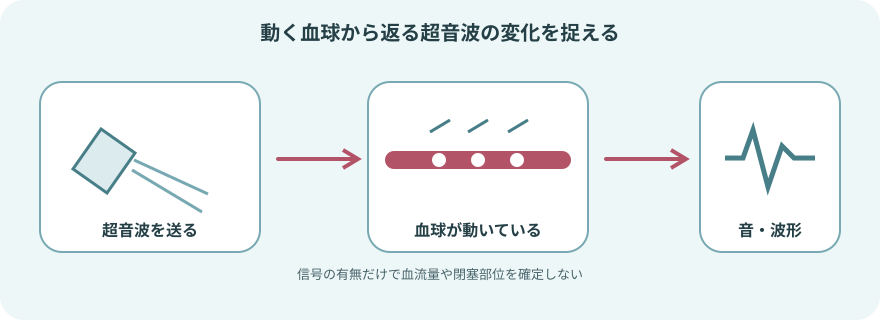
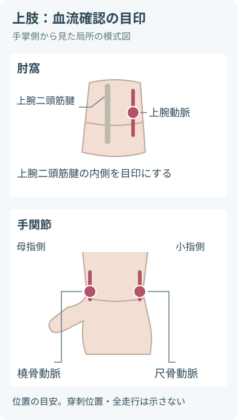
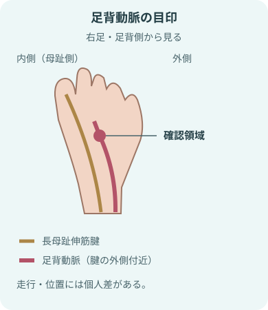
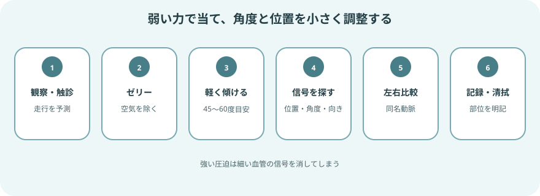
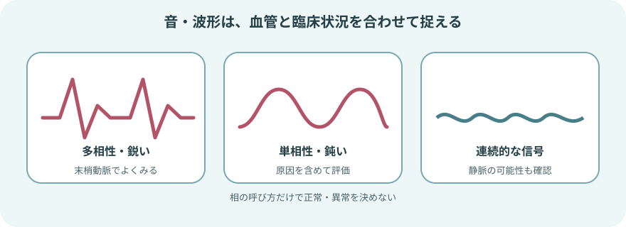

ドップラーで何を確認するか

聞こえるのは「その場所の血流信号」
- 触診で脈拍が分かりにくいときに、末梢動脈の信号を探す。
- 同じ部位を左右で比べ、処置や経過の前後で変化をみる。
- 携帯型装置の音だけでは確定できないこと
- 血管の形
- 狭窄率
- 閉塞部位
- 信号が聞こえても、組織への血流が十分とは限らない。
まず四肢全体を観察する
- 装置を当てる前に、患者の訴えと末梢循環を左右同じ条件でみる。
- 一つの所見だけで判断せず、下記を合わせて評価する。
合わせて評価する所見
- 症状
- 皮膚
- 神経
- 血流
- 症状
- 突然の痛み
- 安静時痛
- しびれ
- 歩行時の痛み
- 創傷
- 皮膚
- 蒼白
- チアノーゼ
- 発赤
- 光沢
- 潰瘍
- 壊死
- 左右差
- 循環
- 皮膚温
- 毛細血管再充満
- 触知できる脈拍
- 浮腫
- 神経・運動
- 感覚低下
- しびれ
- 筋力低下
- 動かしにくさ
- 背景
- 糖尿病
- 腎疾患
- 喫煙
- 動脈疾患
- 血管手術
- カテーテル治療
- ギプス
- 圧迫物
よく確認する末梢動脈
- 最初に触診し、解剖学的な走行を意識して周囲を少しずつ探す。

- 肘窩では上腕二頭筋腱の内側を上腕動脈の目印にする。
- 手関節では母指側の橈骨動脈、小指側の尺骨動脈を確認する。
- 局所の位置関係を示す模式図で、穿刺位置や血管の全走行を示すものではない。


- 内果の後方を探す目印。
- 血管の全走行を示す図ではない。
足部は2か所を確認する
- 足背動脈：足背で、長母趾伸筋腱の外側付近を探す。
- 後脛骨動脈：内果の後方からアキレス腱側にかけて探す。
- 一方が生理的に触れにくい場合があるため、足背動脈と後脛骨動脈を確認し、反対側とも比べる。
- 測定部位は施設の記録方法に合わせ、曖昧に「足の脈」と書かない。
準備
患者と装置の両方を整える
- 確認して説明すること
- 患者確認
- 目的
- 観察部位
- 安楽な体位を整え、対象部位を露出して左右を比べられるようにする
- 使用する物品
- 携帯型ドップラー
- 本体に適合するプローブ
- 超音波ゼリー
- 清拭・感染対策の物品
- ゼリーを拭き取る物品
- 必要時の手袋
- 装置の確認
- 電源
- 音量
- プローブやコードの破損
- 装置の作動
- 冷えや緊張は末梢血管を収縮させる。
- 急変でなければ室温と患者の安楽を整え、測定条件をそろえる。
血流信号を確認する手順

- 観察して触診する触診前の確認
- 皮膚色
- 温度
- 創傷
- 感覚
- 運動
血管の走行をイメージして指で脈拍を探す。
- ゼリーをのせる
- 予測した血管上に超音波ゼリーを置く。
- プローブと皮膚の間に空気が入らないようにする。
- 軽く当てて傾ける
- プローブ先端をゼリーに入れ、血管の長軸に沿って皮膚に対しおよそ45～60度を目安に傾ける。
- 細い血管を押しつぶさない。
- 最も明瞭な信号を探す
- 少しずつ調整すること
- 位置
- 角度
- 向き
- 音量を上げるだけでなく、拍動と同期した信号かを確認する。
- 同じ条件で左右を比べる同名動脈を同じ体位・部位で比較
- 信号の有無
- 強さ
- 性状
- 左右差
- 終了して清潔にする
- ゼリーを拭き取り皮膚を整える。
- プローブは製造元の方法と施設基準に従って清拭・消毒する。
音・波形の捉え方

合わせて評価すること
- 血管
- 部位
- 症状
- 左右差
- 動脈信号：
- 心拍に同期した拍動性の音。
- 末梢動脈では鋭い多相性波形がみられることが多い。
- 単相性・鈍い信号
- 動脈病変より末梢でみられることがある。
- 次の条件などでも変化する。
信号に影響する条件の例- 運動
- 発熱
- 局所の血管拡張
- 静脈信号：
- 動脈より連続的で、呼吸などに伴って変化することがある。
- 近接する静脈を動脈と誤認しない。
- 音だけによる相分類にはばらつきがある。
- 表示波形があれば波形も保存・記録し、判断に迷う場合は経験者や血管検査へつなぐ。
信号が得られないとき
「脈なし」と決める前に手技を見直す
- ゼリーが少ない、先端と皮膚の間に空気がある
- 押す力が強く、血管を圧迫している
- 血管の長軸から外れ、角度が合っていない
- 予測位置からずれている、浮腫や創傷で探しにくい
- 装置で確認する問題
- 電源
- 音量
- プローブ
- コード
- 同じ肢の別の末梢動脈と反対側を確認する
血流確認とABIは別の評価
- 携帯型ドップラーで音を探すだけでは、末梢動脈疾患を診断できない。
- 病歴や診察で末梢動脈疾患が疑われる場合、上腕と足関節の収縮期血圧を測定するABIが基本的な生理検査となる。
- ABIで左右の血圧を測定する動脈
- 上腕動脈
- 足背動脈
- 後脛骨動脈
- カフとドップラー装置を使う。
- 定められた方法で測定する。
- 糖尿病や慢性腎臓病では動脈が圧迫されにくく、ABIが高値・判定困難になることがある。
- 症状や創傷があるのにABIと合わない場合に検討される追加評価
- 足趾上腕血圧比
- 波形
- 皮膚灌流圧
- 画像検査
すぐに報告する変化
- 急性下肢虚血では、時間経過とともに肢の救済が難しくなる。
- 突然の変化は信号探しより緊急評価を優先する。
- 発症時刻と変化を確認し、直ちに報告する。
突然起きた左右差を見逃さない
痛みの変化
- 急な強い疼痛
- 安静時痛の増悪
皮膚色・温度の変化
- 蒼白
- チアノーゼ
- 著明な冷感
触診・ドップラーで確認する末梢動脈信号の変化
- 信号が得られない
- 急に弱くなった
感覚の変化
- しびれ
- 感覚低下
運動の変化
- 筋力低下
- 足趾や足関節を動かせない
新しい循環障害を確認する処置・装着
- 血管処置
- ギプス
- 包帯
- 圧迫物
- 上記の処置・装着後に新しい循環障害がある場合も、すぐに報告する。
記録と申し送り
- 確認条件の記録
- 日時
- 目的
- 体位
- 左右
- 動脈名
- 触診・信号の確認結果
- 触診の可否
- ドップラー信号の有無
- 信号の記録
- 性状
- 表示波形
- 左右差
- 前回からの変化
- 患者所見の記録
- 皮膚色
- 温度
- 毛細血管再充満
- 疼痛
- 感覚
- 運動
- 創傷
- 時間関係を記録する処置・装着
- 血管処置
- 圧迫
- 固定具
- 報告・対応の記録
- 報告した相手
- 時刻
- 指示
- 対応後の変化
出典
- 日本循環器学会ほか「2022年改訂版 末梢動脈疾患ガイドライン」
- 2024 ACC/AHA Multisociety Guideline for the Management of Lower Extremity Peripheral Artery Disease
- Queensland Health, Clinical Task Instruction: Doppler assessment
- Society for Vascular Medicine / Society for Vascular Ultrasound, Interpretation of Peripheral Arterial and Venous Doppler Waveforms
- Society for Vascular Technology of Great Britain and Ireland, ABPI Professional Performance Guidelines
足部の解剖